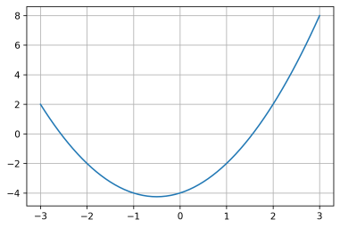

Types construits - Exercices¶
Extrémum dans un tableau¶
Ecrire une fonction maximum(t) qui renvoie la valeur maximale présente dans le tableau t. L’itération sur les indices est interdite.
from math import inf
def maximum(t):
"""
"""
maxi = -inf
for elt in t:
if elt > maxi:
maxi = elt
return maxi
maximum([7, 10, -1, 4])
10
t = [2 * i for i in range(100) if 2*i % 3 == 0]
print(t)
[0, 6, 12, 18, 24, 30, 36, 42, 48, 54, 60, 66, 72, 78, 84, 90, 96, 102, 108, 114, 120, 126, 132, 138, 144, 150, 156, 162, 168, 174, 180, 186, 192, 198]
Tableau défini en compréhension¶
Que construit l’expression ci-dessous?
t = [i % 3 for i in range(100)]
On défini une fonction \(f\) telle que:
def f(t):
"""
renvoie ...?
"""
return [n for n in t if n > 0]
Etant donné x = [-5, 2, 3, -7, 42, 7]. Que vaut f(x)?
t = [i % 3 for i in range(100)]
print(t)
[0, 1, 2, 0, 1, 2, 0, 1, 2, 0, 1, 2, 0, 1, 2, 0, 1, 2, 0, 1, 2, 0, 1, 2, 0, 1, 2, 0, 1, 2, 0, 1, 2, 0, 1, 2, 0, 1, 2, 0, 1, 2, 0, 1, 2, 0, 1, 2, 0, 1, 2, 0, 1, 2, 0, 1, 2, 0, 1, 2, 0, 1, 2, 0, 1, 2, 0, 1, 2, 0, 1, 2, 0, 1, 2, 0, 1, 2, 0, 1, 2, 0, 1, 2, 0, 1, 2, 0, 1, 2, 0, 1, 2, 0, 1, 2, 0, 1, 2, 0]
def f(t):
"""
renvoie ...?
"""
return [n for n in t if n > 0]
f([-5, 2, 3, -7, 42, 7])
[2, 3, 42, 7]
Utilisation des tableaux en compréhension¶
On souhaite écrire un programme donnant le graphe d’une fonction \(f\) sur un intervalle donné.

On définit d’abord la fonction \(f\).
def f(x):
return x ** 2 + x - 4
Que réalise l’instruction
X = [0.1 * n for n in range(-30, 31)]?
Construire un tableau
Ypar compréhension, qui correspond à l’image deXpar \(f\).
X = [0.1 * n for n in range(-30, 31)]
# ENTRER VOTRE CODE ICI
Y = [f(x) for x in X]
print(Y)
[2.0, 1.5100000000000016, 1.040000000000001, 0.5900000000000007, 0.16000000000000014, -0.25, -0.6399999999999988, -1.0099999999999993, -1.3599999999999994, -1.69, -2.0, -2.29, -2.5599999999999996, -2.8099999999999996, -3.0399999999999996, -3.25, -3.4399999999999995, -3.61, -3.76, -3.8899999999999997, -4.0, -4.09, -4.16, -4.21, -4.24, -4.25, -4.24, -4.21, -4.16, -4.09, -4.0, -3.89, -3.76, -3.61, -3.44, -3.25, -3.04, -2.8099999999999996, -2.5599999999999996, -2.29, -2.0, -1.6899999999999995, -1.3599999999999994, -1.0099999999999998, -0.6399999999999997, -0.25, 0.16000000000000014, 0.5900000000000007, 1.04, 1.5100000000000007, 2.0, 2.51, 3.040000000000001, 3.5900000000000016, 4.160000000000002, 4.75, 5.360000000000001, 5.990000000000002, 6.640000000000002, 7.310000000000002, 8.0]
Executer la cellule ci-dessous. Le résultat obtenu est-il conforme à la demande ?
%matplotlib notebook
import matplotlib.pyplot as plt
def tracer(t_x, t_y):
assert len(t_x) == len(t_y), "Erreur: tableaux incohérents"
plt.plot(t_x, t_y)
plt.grid()
plt.show()
# Décommenter la ligne ci-dessous
tracer(X, Y)
Composantes d’un vecteur¶
Ecrire une fonction vecteur qui prend en paramètres deux p-uplets qui correspondent aux coordonnées dans le plan de deux points A et B. La fonction vecteur retourne un n-uplet correspondant aux coordonnées du vecteur \(\vec{AB}\) dans le plan.
#Votre code dans cette cellule
def vecteur(xy_A, xy_B):
"""
Renvoie un p-uplet ayant deux composantes correspondant aux coordonnées d'un vecteur AB.
xy_A, xy_B: tuple à deux éléments, correspondant aux coordonnées (xA, yA) et (xB, yB) de
deux points A et B.
"""
#A compléter
# TEST - DECOMMENTER et EXECUTER
#assert vecteur((5,1), (3,4)) == (-2, 3), "La fonction ne passe pas le test"
Trouver le jour correspondant à une date¶
Python possède un module permettant de gérer les dates. Il s’agit du module datetime. On y trouve, entre autres, une classe qui permet la création d’objet date à partir d’entiers naturels représentant l’année, le mois et le jour. On y trouve aussi une méthode today() dont on verra une utilisation plus loin.
Par exemple, pour créer un objet date correspondant au 31 décembre 2019, on procèdera de la manière suivante:
from datetime import date
d = date(2019, 12, 31)
Les attributs year (année), month (mois) et day (jour) d’un objet date d peuvent être obtenus par d.year, d.month et d.day.
Consulter la documentation relative aux objets de type
dateet notamment la méthodetoday()etweekday().
from datetime import date
#help(date.weekday)
#help(date.today)
Décommenter et exécuter la cellule suivante qui utilise des objets
date.
from datetime import date
d1 = date(2019, 12, 31)
d2 = date.today() # date d'aujourd'hui
#print(d1.day, '/', d1.month, '/', d1.year)
#print("Aujourd'hui, on est le ", end='')
#print(d2.day, '/', d2.month, '/', d2.year)
A partir des exemples précédents, créer un objet
date_ande typedateet correspondant à votre date d’anniversaire.
# Votre code ici
#date_an =
Coder une fonction
trouver_jourqui prend en paramètre un objet de type date et qui renvoie un p-uplet à 4 composantes, qui sont dans l’ordre:le jour, ici une chaine de caractères valant ‘lundi’, ‘mardi’, etc.
le jour dans le mois, ici un entier valant 1, 2, .., 30 ou 31 selon le mois;
le mois, une chaîne de caractère valant ‘janvier’, ‘février’, etc.
l’année, un entier positif.
Aide: utilisation de la méthode weekday() qui permet d’obtenir le jour correspondant à une date.
Exemple: le premier jour de l’an 2000 correspondait à :
from datetime import date
d2000 = date(2000,1,1)
print(d2000.weekday())
5
D’après la documentation, si lundi correspond à 0 alors 5 correspond à un samedi
#Votre code ici
def trouver_jour(d):
"""
Renvoie le jour sous la forme d'un p-uplet à 4 composantes: jour de la semaine (string),
jour dans le mois (int), mois (int) et année (int).
d: objet de type date
"""
# Constantes de type p-uplet à utiliser
SEMAINE = ('lundi', 'mardi', 'mercredi', 'jeudi', 'vendredi', 'samedi', 'dimanche')
MOIS = ('janvier', 'février', 'mars', 'avril', 'mai', 'juin', 'juillet',
'août', 'septembre', 'octobre', 'novembre', 'décembre')
#A compléter
pass
# TEST - DECOMMENTER et EXECUTER
#assert trouver_jour(date(1989,1,29)) == ("dimanche", 29, "janvier", 1989), "La fonction ne passe pas le test"
Trouver le jour de votre naissance.
# Votre code ici
Analyse d’un tableau de notes¶
On souhaite analyser les notes obtenues par un groupe de spécialité NSI. Ces résultats sont modélisés sous la forme d’un tableau de nombres flottants compris entre 0 et 20. Ecrire une fonction analyse_note qui prend comme paramètre un tableau de notes et qui renvoie un p-uplet composé de la médiane, la moyenne et l’écart type.
On utilisera des fonctions disponibles dans la librairie standard de python, plus précisemment dans le module statistics: median, mean et variance.
Prendre connaissance de la documentation sur les fonctions
median,meanetvariancedu modulestatistics.L’écart type est défini comme la racine carrée de la variance. La fonction racine carrée
sqrtpeut être importée depuis le modulemath. Compléter la fonctionanalyse_notedans la cellule déjà préparée ci-dessous, puis tester votre code.
#1. Afficher l'aide sur les fonctions median, mean et variance du module statistics
#2. Votre code dans cette cellule
from statistics import median, mean, variance
from math import sqrt
def analyse_note(t):
"""
Renvoie un p-uplet composé de la médiane, la moyenne et l'écart type d'échantillon de notes.
t: tableau de nombres flottants compris entre 0.0 et 20.0
"""
#A compléter
pass
# TEST - DECOMMENTER et EXECUTER
from math import fabs
#notes = [15, 10, 3, 9, 5, 13, 2]
#epsilon = 1e-5
#assert fabs(analyse_note(notes)[0] - 9.0) < epsilon, "La fonction ne passe pas le test"
#assert fabs(analyse_note(notes)[1] - 8.14285) < epsilon, "La fonction ne passe pas le test"
#assert fabs(analyse_note(notes)[2] - 4.98091) < epsilon, "La fonction ne passe pas le test"
Itérer sur les éléments d’un dictionnaire¶
Au zoo de Beauval, il y a 5 éléphants d’Asie, 17 écureuils d’Asie, 2 pandas d’Asie, etc. On modélise cet inventaire avec un dictionnaire, de la façon suivante:
zoo_Beauval = {
"éléphant" : ("Asie", 5),
"écureuil" : ("Asie", 17),
"panda" : ("Asie", 2),
"hippopotame" : ("Afrique", 7),
"girafe" : ("Afrique", 4)}
De la même façon on représente le zoo de La Flèche:
zoo_LaFleche = {
"ours" : ("Europe", 4),
"tigre" : ("Asie", 7),
"hippopotame" : ("Afrique", 3),
"girafe" : ("Afrique", 11)}
On souhaite écrire une fonction plus_grand_nombre qui prend un zoo en paramètre et qui retourne le nom de l’animal le plus représenté dans ce zoo.
Quel type d’itération doit-on utiliser dans cette fonction?
for cle in d:
...
for val in d.values():
...
for cle,val in d.items():
...
Aucune itération
Coder cette fonction
#Votre code dans cette cellule
def plus_grand_nombre(zoo):
"""
Retourne le nom de l'animal (string) le plus représenté dans le zoo passé en paramètre.
zoo: dictionnaire
"""
#A compléter
pass
# TEST - DECOMMENTER et EXECUTER
#assert plus_grand_nombre(zoo_LaFleche) == "girafe", "La fonction ne passe pas le test"
#assert plus_grand_nombre(zoo_Beauval) == "écureuil", "La fonction ne passe pas le test"
On souhaite écrire une fonction
nombre_totalqui prend en paramètres un zoo et un nom de continent. Cette fonction doit retourner le nombre total d’animaux originaires de ce continent. Quel type d’itération doit-on utiliser dans cette fonction?
for cle in d:
...
for val in d.values():
...
for cle,val in d.items():
...
Aucune itération
Coder cette fonction
#Votre code dans cette cellule
def nombre_total(zoo, continent):
"""
Retourne le nombre total d'animaux (entier naturel) présents dans le zoo
et originaire du continent.
zoo: dictionnaire
continent: string
"""
#A compléter
pass
# TEST - DECOMMENTER et EXECUTER
#assert nombre_total(zoo_LaFleche, "Afrique") == 14, "La fonction ne passe pas le test"
#assert nombre_total(zoo_Beauval, "Asie") == 24, "La fonction ne passe pas le test"
On souhaite écrire une fonction
nombrequi prend en paramètres un zoo et un nom d’animal. La fonction doit retourner le nombre de représentant de cet animal (entier naturel) dans le zoo. Quel type d’itération doit-on utiliser dans cette fonction?
for cle in d:
...
for val in d.values():
...
for cle,val in d.items():
...
Aucune itération
Coder cette fonction
#Votre code dans cette cellule
def nombre(zoo, animal):
"""
Retourne le nombre total d'animaux (entier naturel) présents dans le zoo
et originaire du continent.
zoo: dictionnaire
continent: string
"""
#A compléter
pass
# TEST - DECOMMENTER et EXECUTER
#assert nombre_total(zoo_LaFleche, "Afrique") == 14, "La fonction ne passe pas le test"
#assert nombre_total(zoo_Beauval, "Asie") == 24, "La fonction ne passe pas le test"